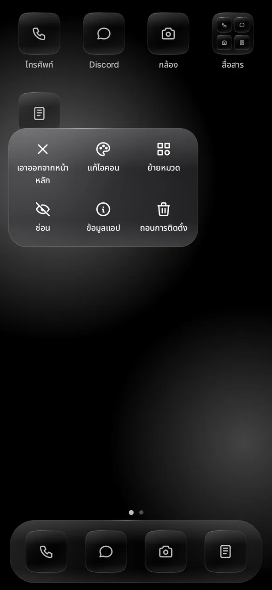

Liquid Glass
Dock แถบหมวด ปุ่ม และเมนูเป็นกระจกเบลอ มีขอบสะท้อนแสงและหักเหภาพด้านหลัง
สำหรับ Android · ไฟล์ APK
คลีน มินิมอล ไอคอนกระจกดำ จัดหมวดแอปให้อัตโนมัติ และแอนิเมชันลื่นทุกการแตะ

Dock แถบหมวด ปุ่ม และเมนูเป็นกระจกเบลอ มีขอบสะท้อนแสงและหักเหภาพด้านหลัง
ไอคอนจริงของทุกแอปแปลงเป็นขาวดำ เลือกกระจกสี กระจกใส หรือต้นฉบับก็ได้
ปัดขึ้นเพื่อดูแอปแยกหมวด ย้ายแอป เพิ่ม ลบ หรือเปลี่ยนชื่อหมวดเองได้
ฟองกระจกไหลตามหมวด ไอคอนเด้งเข้ามาทีละตัว ปุ่มยุบเวลากด
ฟอนต์คลีนทั้งสองภาษา เปลี่ยนภาษาได้ในตั้งค่า
สร้างวอลเปเปอร์ ไอคอน และ Widget เอง — เร็ว ๆ นี้




รองรับ Android 10 ขึ้นไปเท่านั้น